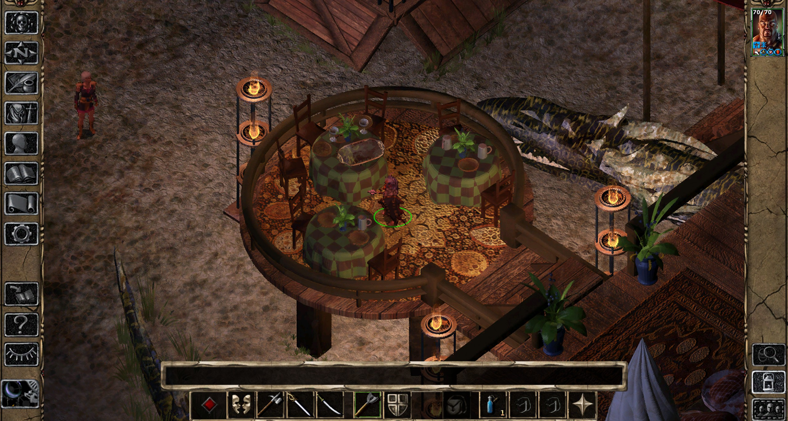

Vanillax4 maps + animationsCapture 01 · Steam · 2560 × 1369
Maps & animation verification
Environment and map animations are treated in this matched gameplay capture. Creature sprites remain vanilla reference elements.
Maps and animations treated · creature sprites remain vanilla